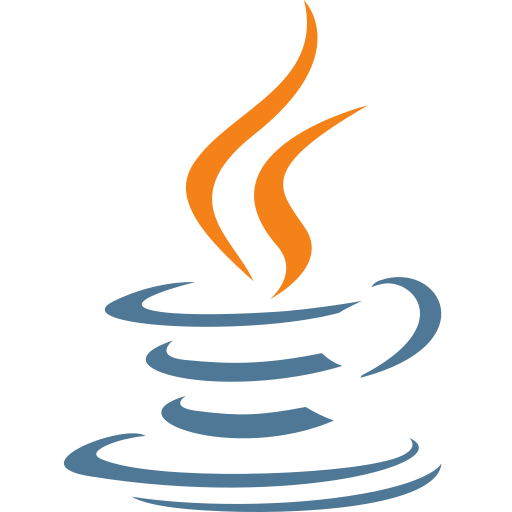
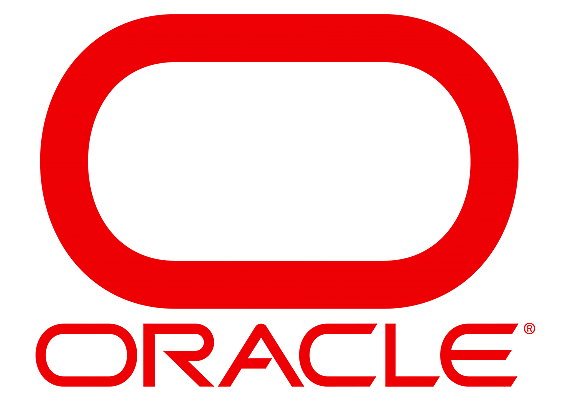
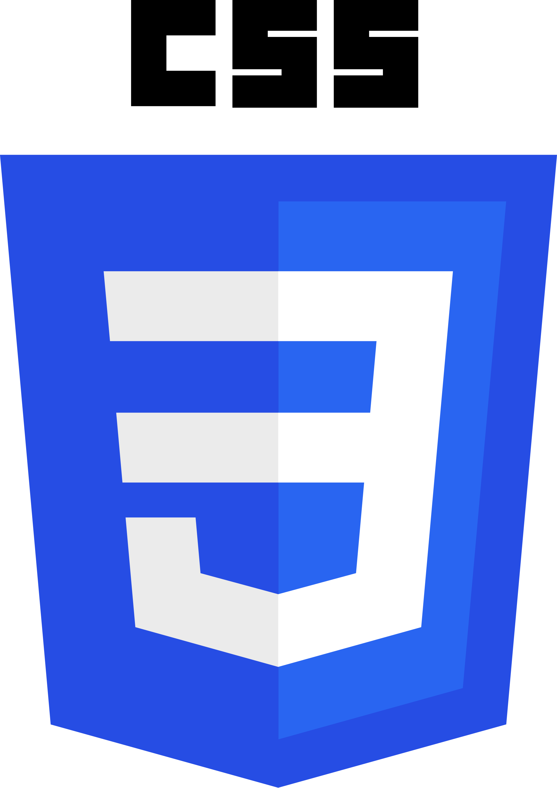

Backend & Cloud

JavaSpring Boot
Arquitectura de microservicios
 AWS
AWSPython
Portafolio profesional
Estudiante de Ingenieria en Informatica y Telecomunicaciones
Construyo sistemas backend con Java y Spring Boot, administro bases de datos Oracle y diseño arquitecturas de microservicios en la nube. Este portafolio reúne los proyectos con los que he ido armando ese camino.
01 — Sobre mí
Estudio en Duoc UC , donde curso simultáneamente Desarrollo de App Moviles, administración de bases de datos y desarrollo full-stack. Me interesa particularmente todo lo que ocurre "detrás" de una aplicación: cómo se dividen sus responsabilidades en microservicios, cómo se modelan y protegen sus datos, y cómo se despliega de forma confiable en la nube.
Fuera de lo estrictamente académico, también dedico tiempo al diseño de interfaces y a proyectos personales de programación, que uso como espacio para experimentar con ideas que no siempre caben en un ramo.
02 — Habilidades

JavaSpring BootArquitectura de microserviciosPython
Oracle SQL & PL/SQL Modelamiento de bases de datos
Modelamiento de bases de datos Administración de esquemas
Administración de esquemas HTML5 semántico
HTML5 semántico
CSS3 (Grid / Flexbox) JavaScript
JavaScript Git
Git GitHub
GitHub Figma
Figma ClickUp
ClickUp03 — Proyectos
Sistema de gestión académica para un instituto, construido en equipo con microservicios independientes (evaluaciones, docentes, asistencia). Participé en el diseño de tres de los servicios y en la revisión de código del resto del sistema, corrigiendo patrones inconsistentes con las buenas prácticas del curso.
Ver repositorioPropuesta de app móvil para el control de acceso en condominios: diagramas de casos de uso, historias de usuario y un prototipo navegable en Figma, pensado para tres perfiles distintos de usuario (residente, conserje y administración).
Ver prototipoBackend modular para la simulación de un juego de tablero por turnos: diseñado en torno a cinco microservicios independientes (jugadores, dado, tablero, control de turnos e historial de jugadas) protegidos mediante autenticación JWT.
Ver repositorio04 — Contacto
¿Tienes una práctica, un proyecto o simplemente quieres comentar algo técnico? Escríbeme por el formulario o por cualquiera de estos canales.